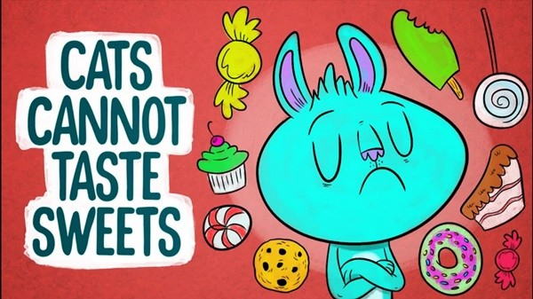
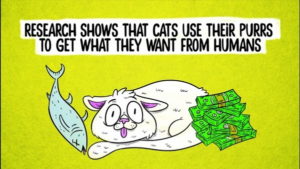

貓咪的左右撇子原因是？你不知道的8個貓咪小知識
2017.09.21 Wime特派員 克萊兒
貓咪的左右撇子原因是？

愛貓成痴的你對於貓咪的知識了解多少呢？時而冷酷時而親近，貓咪優雅的姿態還有令人捉摸不定的性格不知道讓多少貓奴甘願拜倒在他們的魅力之下呢～今天妞編輯要來跟大家分享幾個關於貓咪的小知識，喜歡貓咪的妞妞千萬別錯過喔！
貓咪的左右撇子跟性別有關❤

女生是右撇子、男生是左撇子！妞妞們是不是想不到左右撇子其實與性別有關呢～
貓咪沒辦法甜味的味覺

因為味覺上的先天缺陷讓甜味無法激活味覺細胞，因此貓咪沒辦法嚐出甜味呢
貓咪沒辦法從牛奶攝取養分

如果撿到了小貓咪的話，記得一定要去購買貓用的牛奶喔！因為乳糖不耐症的關係，一般我們喝的牛奶小貓是無法吸收它的養分的
貓咪的耳朵有超過20條肌肉控制

耳朵像雷達天線一樣，因為有多條肌肉控制，可隨聲音轉動來捕捉聲音的方位。
肉墊會流汗

貓身上除了肉墊外是沒有汗腺的。貓咪出汗不是為了調節體溫，而是為了防滑
貓咪用他們的咕嚕聲從人類手中得到他們想要的東西

其實不只貓咪，動物們真的很了解人類的弱點呢（這是什麼奸詐樣啦～）
咕嚕聲可能是貓的一種自我治癒也同時可能代表緊張或是滿足喔

對於成貓來說，咕嚕聲可以代表很多種意思。它可以是一種自我治癒也同時可能代表緊張或是滿足喔！
他們能跳到比自己高七倍的高度
自己身體七倍的高度真的是個驚人的數據呢！不過也要提醒主人們也要注意貓咪跳上跳下時的安全性喔！
這些關於貓咪的小知識你們答對了幾個呢？看完了這些介紹之後，妞妞們是不是也因此更了解他們的身體構造還有習性了呢～
留個言吧~